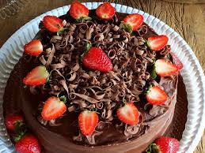
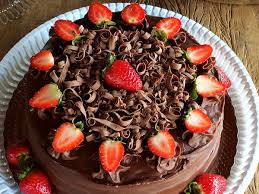
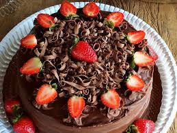

A Doces da Vovó é uma confeitaria artesanal dedicada a trazer o sabor aconchegante e acolhedor das receitas caseiras para o seu dia a dia. Nossa missão é resgatar as tradições familiares de um modo único, oferecendo doces feitos com carinho e ingredientes selecionados, com um toque especial que só a receita da vovó tem. Especializados em bolos, tortas e guloseimas que aquecem o coração, garantimos uma experiência de sabor autêntico e nostálgico, perfeita para qualquer ocasião. Cada doce é preparado com amor e a dedicação que só a verdadeira culinária caseira pode proporcionar.
Na Doces da Vovó, acreditamos que cada doce conta uma história — de família, de encontros e de afeto. Por isso, valorizamos o preparo artesanal, sem pressa e com atenção aos detalhes, como antigamente. Nossos produtos são inspirados nas receitas tradicionais passadas de geração em geração, mas também abrimos espaço para releituras criativas, sempre mantendo o sabor caseiro como prioridade. Queremos que cada cliente se sinta em casa ao provar nossos doces, revivendo memórias afetivas e criando novas lembranças cheias de sabor.
